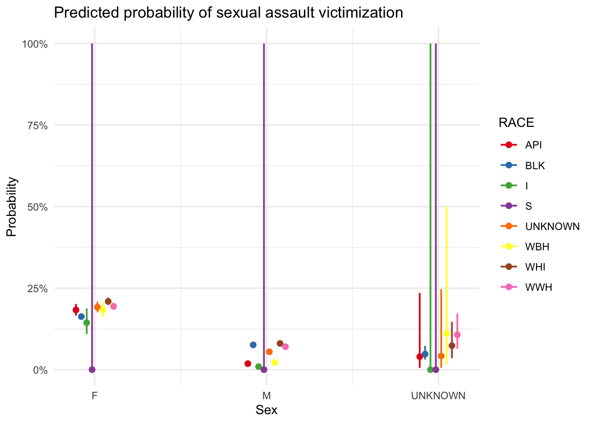

library(readr)
Violence <- read_csv("scripts/Violence_clean_missing.csv")Rows: 51070 Columns: 12
── Column specification ────────────────────────────────────────────────────────
Delimiter: ","
chr (8): TIME_PERIOD, TIME_PERIOD_START, TIME_PERIOD_END, PRIMARY_TYPE, AGE,...
dbl (2): NUMBER_OF_VICTIMS, Year
lgl (2): JUVENILE_I, DOMESTIC_I
ℹ Use `spec()` to retrieve the full column specification for this data.
ℹ Specify the column types or set `show_col_types = FALSE` to quiet this message.# Load packages
library(dplyr)
Attaching package: 'dplyr'
The following objects are masked from 'package:stats':
filter, lag
The following objects are masked from 'package:base':
intersect, setdiff, setequal, unionlibrary(ggplot2)
library(broom)
library(ggeffects) # for prediction plotting
# Step 1: Create binary response variable
Violence_clean <- Violence |>
filter(!is.na(SEX), !is.na(RACE), !is.na(PRIMARY_TYPE)) |>
mutate(
IS_SEXUAL_ASSAULT = ifelse(PRIMARY_TYPE == "CRIMINAL SEXUAL ASSAULT", 1, 0),
SEX = factor(SEX),
RACE = factor(RACE)
)
# Step 2: Fit logistic regression
model <- glm(IS_SEXUAL_ASSAULT ~ SEX * RACE, data = Violence_clean, family = "binomial")
# Step 3: Summarize model
summary(model)
Call:
glm(formula = IS_SEXUAL_ASSAULT ~ SEX * RACE, family = "binomial",
data = Violence_clean)
Coefficients: (3 not defined because of singularities)
Estimate Std. Error z value Pr(>|z|)
(Intercept) -1.495e+00 6.072e-02 -24.626 < 2e-16 ***
SEXM -2.473e+00 1.672e-01 -14.794 < 2e-16 ***
SEXUNKNOWN -1.683e+00 1.022e+00 -1.646 0.0998 .
RACEBLK -1.416e-01 6.781e-02 -2.089 0.0367 *
RACEI -2.850e-01 1.739e-01 -1.639 0.1013
RACES -7.598e+00 9.848e+01 -0.077 0.9385
RACEUNKNOWN 5.658e-02 8.115e-02 0.697 0.4856
RACEWBH 4.771e-04 9.645e-02 0.005 0.9961
RACEWHI 1.670e-01 6.993e-02 2.388 0.0169 *
RACEWWH 7.226e-02 6.985e-02 1.035 0.3009
SEXM:RACEBLK 1.614e+00 1.747e-01 9.240 < 2e-16 ***
SEXUNKNOWN:RACEBLK 3.290e-01 1.048e+00 0.314 0.7536
SEXM:RACEI -4.153e-01 4.458e-01 -0.932 0.3515
SEXUNKNOWN:RACEI -8.103e+00 1.137e+02 -0.071 0.9432
SEXM:RACES NA NA NA NA
SEXUNKNOWN:RACES NA NA NA NA
SEXM:RACEUNKNOWN 1.065e+00 1.979e-01 5.380 7.44e-08 ***
SEXUNKNOWN:RACEUNKNOWN NA NA NA NA
SEXM:RACEWBH 1.761e-01 2.459e-01 0.716 0.4740
SEXUNKNOWN:RACEWBH 1.098e+00 1.475e+00 0.744 0.4566
SEXM:RACEWHI 1.364e+00 1.784e-01 7.647 2.05e-14 ***
SEXUNKNOWN:RACEWHI 4.796e-01 1.096e+00 0.438 0.6616
SEXM:RACEWWH 1.319e+00 1.783e-01 7.402 1.34e-13 ***
SEXUNKNOWN:RACEWWH 9.827e-01 1.061e+00 0.926 0.3545
---
Signif. codes: 0 '***' 0.001 '**' 0.01 '*' 0.05 '.' 0.1 ' ' 1
(Dispersion parameter for binomial family taken to be 1)
Null deviance: 37548 on 51069 degrees of freedom
Residual deviance: 35408 on 51049 degrees of freedom
AIC: 35450
Number of Fisher Scoring iterations: 10# Optional: Tidy output
tidy(model, exponentiate = TRUE, conf.int = TRUE)Warning: glm.fit: fitted probabilities numerically 0 or 1 occurred
Warning: glm.fit: fitted probabilities numerically 0 or 1 occurred
Warning: glm.fit: fitted probabilities numerically 0 or 1 occurred
Warning: glm.fit: fitted probabilities numerically 0 or 1 occurred
Warning: glm.fit: fitted probabilities numerically 0 or 1 occurred
Warning: glm.fit: fitted probabilities numerically 0 or 1 occurred
Warning: glm.fit: fitted probabilities numerically 0 or 1 occurred
Warning: glm.fit: fitted probabilities numerically 0 or 1 occurred
Warning: glm.fit: fitted probabilities numerically 0 or 1 occurred
Warning: glm.fit: fitted probabilities numerically 0 or 1 occurred
Warning: glm.fit: fitted probabilities numerically 0 or 1 occurred
Warning: glm.fit: fitted probabilities numerically 0 or 1 occurred
Warning: glm.fit: fitted probabilities numerically 0 or 1 occurred
Warning: glm.fit: fitted probabilities numerically 0 or 1 occurred
Warning: glm.fit: fitted probabilities numerically 0 or 1 occurred
Warning: glm.fit: fitted probabilities numerically 0 or 1 occurred
Warning: glm.fit: fitted probabilities numerically 0 or 1 occurred
Warning: glm.fit: fitted probabilities numerically 0 or 1 occurred
Warning: glm.fit: fitted probabilities numerically 0 or 1 occurred
Warning: glm.fit: fitted probabilities numerically 0 or 1 occurredWarning in regularize.values(x, y, ties, missing(ties), na.rm = na.rm):
collapsing to unique 'x' values# A tibble: 24 × 7
term estimate std.error statistic p.value conf.low conf.high
<chr> <dbl> <dbl> <dbl> <dbl> <dbl> <dbl>
1 (Intercept) 0.224 0.0607 -24.6 6.72e-134 0.199 0.252
2 SEXM 0.0843 0.167 -14.8 1.60e- 49 0.0599 0.116
3 SEXUNKNOWN 0.186 1.02 -1.65 9.98e- 2 0.0104 0.884
4 RACEBLK 0.868 0.0678 -2.09 3.67e- 2 0.761 0.992
5 RACEI 0.752 0.174 -1.64 1.01e- 1 0.529 1.05
6 RACES 0.000502 98.5 -0.0771 9.39e- 1 NA 40.0
7 RACEUNKNOWN 1.06 0.0811 0.697 4.86e- 1 0.903 1.24
8 RACEWBH 1.00 0.0965 0.00495 9.96e- 1 0.827 1.21
9 RACEWHI 1.18 0.0699 2.39 1.69e- 2 1.03 1.36
10 RACEWWH 1.07 0.0699 1.03 3.01e- 1 0.938 1.23
# ℹ 14 more rows# Step 4: Plot predicted probabilities
pred <- ggpredict(model, terms = c("SEX", "RACE"))
plot(pred) +
labs(title = "Predicted probability of sexual assault victimization",
y = "Probability", x = "Sex") +
theme_minimal()